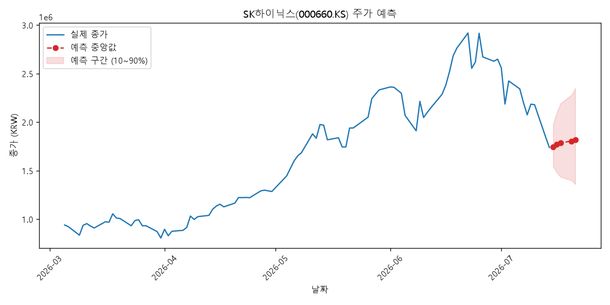
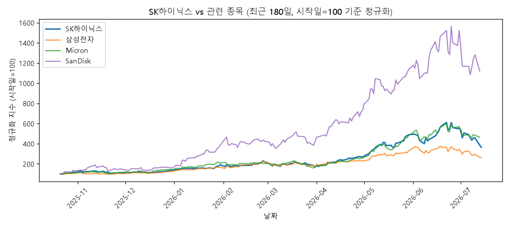
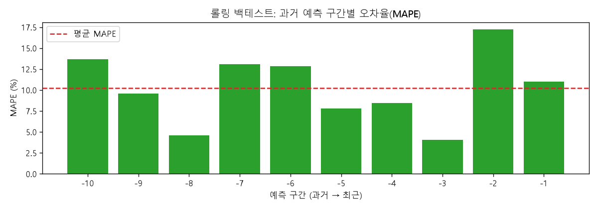

Chronos 모델은 향후 5거래일 뒤 종가를 현재(1,739,000원) 대비 +4.58% (상승)한 1,818,620원 안팎으로 전망합니다 (10~90% 구간: 1,360,436원 ~ 2,352,260원). 같은 기간 수집된 뉴스 논조는 부정적(-0.40)으로, 예측치에 소폭 반영되었습니다.

| 날짜 | 하한(10%) | 중앙값 | 상한(90%) |
|---|---|---|---|
| 2026-07-15 | 1,545,182 | 1,747,408 | 1,980,343 |
| 2026-07-16 | 1,480,504 | 1,770,527 | 2,102,183 |
| 2026-07-17 | 1,435,812 | 1,786,863 | 2,192,948 |
| 2026-07-20 | 1,399,439 | 1,805,628 | 2,282,444 |
| 2026-07-21 | 1,360,436 | 1,818,620 | 2,352,260 |
최근 수집 뉴스 60건의 평균 감성 점수: -0.40 (부정적) — 예측 중앙값에 -0.40% 보정 반영됨 (감성 점수 기반 단순 휴리스틱)
| 검색어 | 제목 | 감성 |
|---|---|---|
| SK하이닉스 | SK하이닉스, 용인 'Y1' 팹 구축 본격화…장비 발주 시작 - 지디넷코리아 | 부정 (-0.63) |
| SK하이닉스 | "AI 파티 끝났나"…월가가 본 SK하이닉스 13% 급락 이유 - 연합인포맥스 | 부정 (-0.86) |
| SK하이닉스 | SK하이닉스 美 ADR 9.3% 급락...공모가와 3.35달러 차이로 내려와 - 조선일보 | 부정 (-0.74) |
| SK하이닉스 | [단독] SK하이닉스, 호남팹 합작 투자 가능 … 수십조 재무부담 던다 - 한국경제 | 부정 (-0.93) |
| SK하이닉스 | SK하이닉스 실적전망 또 하향..."이미 주가 급락, 저점 매수 기회" - 머니투데이 - 머니투데이 | 부정 (-0.98) |
| SK하이닉스 | SK하이닉스 등 반도체주 하락…금리 우려까지 겹쳐 - KBS 뉴스 | 부정 (-0.58) |
| SK하이닉스 | 삼성전자·SK하이닉스 주춤한 사이 중국 반도체는 ‘재평가’...ETF도 질주 - 조선일보 | 부정 (-0.62) |
| SK하이닉스 | SK하이닉스 170만원마저 붕괴…코스피 6400선 5%대 급락 [투자360] - 네이트 | 부정 (-0.95) |
| SK하이닉스 | 코스피 혼조세...SK하이닉스 4%대 하락했다 상승 전환 - 조선일보 | 부정 (-0.97) |
| SK하이닉스 | SK하이닉스 고점比 38% 빠졌다…왜 지금, 이렇게까지? - v.daum.net | 긍정 (+0.57) |
| SK하이닉스 | 삼성 핵심 인력 SK하이닉스 이직 제동…법원 "1년 반 금지" - YTN | 부정 (-0.78) |
| SK하이닉스 | 법원 "삼성 핵심 반도체 인력, SK하이닉스 이직 1년 반 금지" - MBC 뉴스 | 부정 (-0.81) |
| SK하이닉스 | 지난달도 삼성 반도체 60명 하이닉스로…HBM4 인재전 확산 - v.daum.net | 긍정 (+0.65) |
| SK하이닉스 | SK하이닉스, 청주 한부모가족에 온누리상품권 5천만원 기탁 - 연합뉴스 | 부정 (-0.90) |
| SK하이닉스 | SK하이닉스 미 ADR 9.3% 급락…공모가 소폭 웃돌아 - 연합뉴스TV | 부정 (-0.67) |
| SK하이닉스 목표주가 | SK하이닉스 실적전망 또 하향..."이미 주가 급락, 저점 매수 기회" - 머니투데이 - 머니투데이 | 부정 (-0.98) |
| SK하이닉스 목표주가 | SK하이닉스 목표가 '185만 vs 420만'…증권가 시각 왜 갈렸나 - 인베스트조선 | 부정 (-0.72) |
| SK하이닉스 목표주가 | ‘40조원 흥행’ SK하이닉스, 주가 전망은 185만 vs 420만원 - 중앙일보 | 부정 (-0.85) |
| SK하이닉스 목표주가 | SK하이닉스 목표주가 ‘185만원’…충격의 증권가 리포트 나왔다 - 문화일보 | 부정 (-0.62) |
| SK하이닉스 목표주가 | SK하이닉스, AI사이클 공급구조 변화 견인...목표주가 330만원 유지-현대차증권 - PRESS9 | 긍정 (+0.50) |
| SK하이닉스 목표주가 | [종목분석] SK하이닉스 주가 185만원, 목표주가 420만원의 조건 - TopStarNews | 긍정 (+0.55) |
| SK하이닉스 목표주가 | 현대차증권 "SK하이닉스 2분기 실적 기대치 밑돌 것, 장기계약 확대는 긍정적" - 비즈니스포스트 | 부정 (-0.96) |
| SK하이닉스 목표주가 | SK하이닉스 현 주가보다 낮은 목표가…BNK증권 185만원 제시 - 연합뉴스TV | 부정 (-0.75) |
| SK하이닉스 목표주가 | “끝나지 않은 반도체 랠리”…SK하이닉스, 목표주가 420만원 유지 - 매일경제 | 긍정 (+0.50) |
| SK하이닉스 목표주가 | 'ADR 호재' 덮은 실적 우려…SK하이닉스 200만 원 붕괴 - 연합인포맥스 | 부정 (-0.97) |
| SK하이닉스 목표주가 | 'SK하이닉스 200만원 넘는데'…BNK증권, 목표가 185만원 제시 - 연합뉴스 | 부정 (-0.85) |
| SK하이닉스 목표주가 | "추세 꺾인 거 맞았네" … '나홀로' SK하이닉스 폭락 경고한 BNK 리서치 재조명 - 뉴데일리 | 부정 (-0.94) |
| SK하이닉스 목표주가 | 삼성전자·SK하이닉스 목표주가 왜 이렇게 다를까? - 2news.co.kr | 긍정 (+0.64) |
| SK하이닉스 목표주가 | SK하이닉스 ADR 상장 D-1…애널리스트들 주가 전망 여전히 '긍정적' - 지디넷코리아 | 부정 (-0.95) |
| SK하이닉스 목표주가 | [마켓 프리뷰] '7000선'마저 무너진 코스피…SK하이닉스 효과 실종 - SBS Biz | 부정 (-0.94) |
| 반도체 지정학 | [코스피·코스닥지수] 중동 긴장 고조에 국제유가 급등…코스피, 지정학 리스크와 반도체 호재 '줄다리기’ - 한국강사신문 | 긍정 (+0.60) |
| 반도체 지정학 | [경제밥도둑]롯데·LG 지고, 한화·LS·반도체 뜨고···AI와 지정학 갈등이 만든 ‘재계 지각변동’ - 경향신문 | 부정 (-0.96) |
| 반도체 지정학 | “올해 우리나라 성장의 세 가지 키워드…반도체·지정학 그리고 양극화” - 마켓인 | 긍정 (+0.98) |
| 반도체 지정학 | "지정학 리스크에 韓 반도체 40년 만의 슈퍼 사이클…해양·방산·조선업도 관심" - 뉴시스 | 부정 (-0.83) |
| 반도체 지정학 | [지금 주목할 종목] "지정학 리스크 뚫는 실적 체력… 반도체 소부장 · EUV 주도주 선점은 이 종목" - 머니투데이 - 머니투데이 | 긍정 (+0.68) |
| 반도체 지정학 | 韓 여야의원들 대만 방문…“지정학 도전·반도체 등 논의” - v.daum.net | 긍정 (+0.53) |
| 반도체 지정학 | 전쟁이 만든 지정학 프리미엄··· ‘에너지·방산·반도체’ 위기 속 더 강해진다 - 그린포스트코리아 | 긍정 (+0.65) |
| 반도체 지정학 | 韓 여야의원들 대만 방문…“지정학 도전·반도체 등 논의” - dt.co.kr | 긍정 (+0.54) |
| 반도체 지정학 | “AI냐 전쟁이냐” 반도체 ETF, 낙관론과 지정학 리스크의 격전지로 부상 - Benzinga | 긍정 (+0.60) |
| 반도체 지정학 | [AI칩 지정학] ① 파운드리 이전 '분업 도시'···신주가 세계 반도체를 찍어내는 방식 - 여성경제신문 | 부정 (-0.97) |
| 반도체 지정학 | '빛의 전쟁'에서 한국은 살아남을 것인가... 미 마이크로소프트발 광반도체 재편의 실체 - 초이스스탁 | 긍정 (+0.71) |
| 반도체 지정학 | [AI MY 증시전망] 지정학 리스크 속 반도체·성장주 주목 - 뉴스핌 | 부정 (-0.88) |
| 반도체 지정학 | 한국 여야 의원단 대만 방문…지정학·반도체·AI 협력 논의 - 아주경제 | 부정 (-0.85) |
| 반도체 지정학 | [실리콘 디코드] 中 자본 vs 歐 경영진 '반도체 내전'…넥스페리아, 웨이퍼 끊고 전면전 - 글로벌이코노믹 | 부정 (-0.98) |
| 반도체 지정학 | 한국 여야 의원단 대만 방문…지정학·반도체·AI 협력 논의 - v.daum.net | 부정 (-0.69) |
| 반도체 업황 | 중국 반도체 추격 변수로 부상…"초격차 사수해야" - 연합뉴스 | 부정 (-0.58) |
| 반도체 업황 | 중국 반도체 추격 변수로 부상…"초격차 사수해야" - v.daum.net | 긍정 (+0.72) |
| 반도체 업황 | 반도체 업황 꺽였나…삼성전자 10%·하이닉스 15% 급락 마감 - 디지털데일리 | 부정 (-0.90) |
| 반도체 업황 | AI 랠리에 균열… 주식 투매 불러온 ‘반도체 고점론’ - 조선비즈 - Chosunbiz | 긍정 (+0.57) |
| 반도체 업황 | 반도체 지금이라도 손절? 업황 믿고 버텨라?…월가 조언은 - 네이버 프리미엄콘텐츠 | 긍정 (+0.62) |
| 반도체 업황 | 40개월 이어진 호황에도...‘반도체 고점론’ 일축한 한은 - 에너지경제신문 | 부정 (-0.92) |
| 반도체 업황 | “삼전닉스 결말은 오징어게임?”…시장 공포 부른 반도체 피크아웃론 점검 [목대균의 글로벌 인사이트] - 매일경제 | 부정 (-0.81) |
| 반도체 업황 | [증시 긴급진단] "반도체 패닉, 업황 훼손 아닌 수급 꼬임…중심 잡아야" - 연합인포맥스 | 부정 (-0.88) |
| 반도체 업황 | [굿모닝 마켓] 뉴욕증시, 이란·반도체 양대 악재에 급락 · 시장 영향은? - supple.kr | 부정 (-0.96) |
| 반도체 업황 | 로베코 "정부 전략산업된 소버린AI가 수요 뒷받침…메모리 사이클은 연장될 것" - 네이트 | 부정 (-0.57) |
| 반도체 업황 | 엠케이전자, 사상 최대 실적 기대…메모리 호황에 반도체 소재 공급↑ - 머니투데이 - 머니투데이 | 부정 (-0.89) |
| 반도체 업황 | 삼성전자, 반도체 경력직 채용 확대 … 82개 직무 인재 선발 - 뉴데일리 | 긍정 (+0.57) |
| 반도체 업황 | “과거 사이클과 다른 장기 호황”… 한은, 반도체 고점론 일축 - v.daum.net | 부정 (-0.75) |
| 반도체 업황 | [증시 긴급진단] "기술적 약세장 진입…반도체 실적 전 매수 기회" | - 연합인포맥스 | 부정 (-0.87) |
| 반도체 업황 | 반도체 휘청이며 '검은 월요일'…코스피 7,000선도 내줘 - 연합뉴스 | 부정 (-0.81) |
메모리 반도체 업황을 함께 좌우하는 종목들과의 최근 180일 추세 비교 및 일별 수익률 상관계수입니다.

| 종목 | 상관계수 | 강도 |
|---|---|---|
| 삼성전자 | +0.71 | 강함 |
| Micron | +0.34 | 보통 |
| SanDisk | +0.20 | 약함 |
가장 최근 5거래일을 정답으로 숨기고, 그 이전 데이터까지의 정보만으로 같은 방식으로 예측해본 결과입니다.
MAE(평균 절대 오차): 200,411원 · MAPE(평균 절대 백분율 오차): 11.00%
| 실제 종가 | 예측 종가 | 오차 |
|---|---|---|
| 2,076,000 | 2,194,060 | +5.69% |
| 2,186,000 | 2,197,230 | +0.51% |
| 2,180,000 | 2,195,810 | +0.73% |
| 1,845,000 | 2,214,728 | +20.04% |
| 1,739,000 | 2,226,229 | +28.02% |
단일 구간만으로는 우연히 잘/못 맞을 수 있어, 과거 10개 시점 각각에서 "그 시점까지의 데이터만" 사용해 반복적으로 예측/채점한 결과입니다 (walk-forward, look-ahead 없음).
평균 MAPE: 10.23% (표준편차 3.93%p) · 평균 MAE: 215,872원

monologg/koelectra-small-finetuned-nsmc (사전학습, 공개 모델)amazon/chronos-bolt-small (Amazon Chronos-Bolt, 사전학습 시계열 파운데이션 모델, zero-shot)